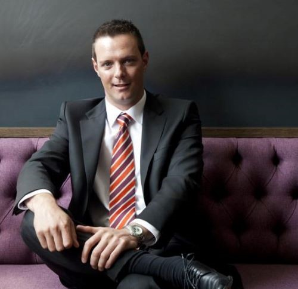

Centurion Chamber of Commerce
Target Audience
The primary target audience will be business owners, business stakeholders, and business leaders who who's who's businesses reside in or wish to reside in the city of Centurion and wish to grow and develop their businesses, as well as network and strategize with other businesses who also currently reside in the city of Centurion.
Personas
Stephanie-Lee Peters

- Occupation: Restaurant Owner
- Demographics: 35 years old, married with 2 kids, Bachelor's degree in Business Communication
- Goals & Motivation: Learn more about businesses in the area, and attract customers to her own business by finding out needs and intterests of surrounding businesses
- Technology: Is a loyal Apple customer and uses a Macbook Pro, iPad, and the latest iPhone
- Quote: "I like speed and efficiency when it comes to running my business. I strive for the highest quality and attract positive and optimistic energy."
Justin Davidson
- Occupation: Web security company CEO
- Demographics: 41 years old, extensive IT experience, has a bachelors degree in Marketing and an MBA
- Goals & Motivation: To grow the business and service the web security needs of surrounding business
- Technology: Uses a Windows laptop for work, as well as an iPad for meetings and scheduling. Uses a Samsung Galaxy S20 Ultra
- Quote: "If you are not moving forwaard, you are going backwards. There is no standing still."
Scenarios
- What other business in my area can I connect with?
- How can the Centurion Chamber of Commerce help imrove and grow my business?
- Where can I see examples of how the Centurion Chamber of Commerce has helped other businesses?
- What practical services does the Centurion Chamber of Commerce offer to help my business?
- How do I apply to join the Centurion Chamber of Commerce?